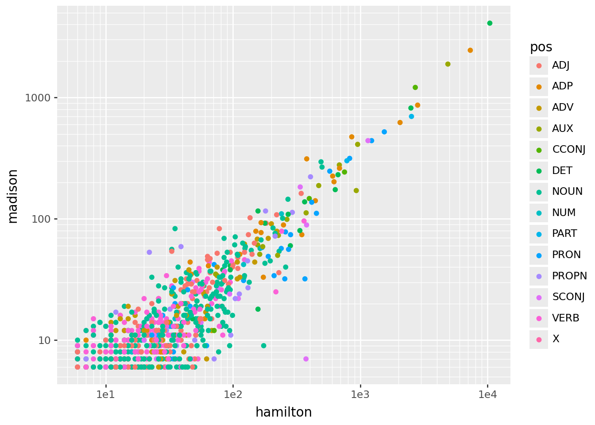
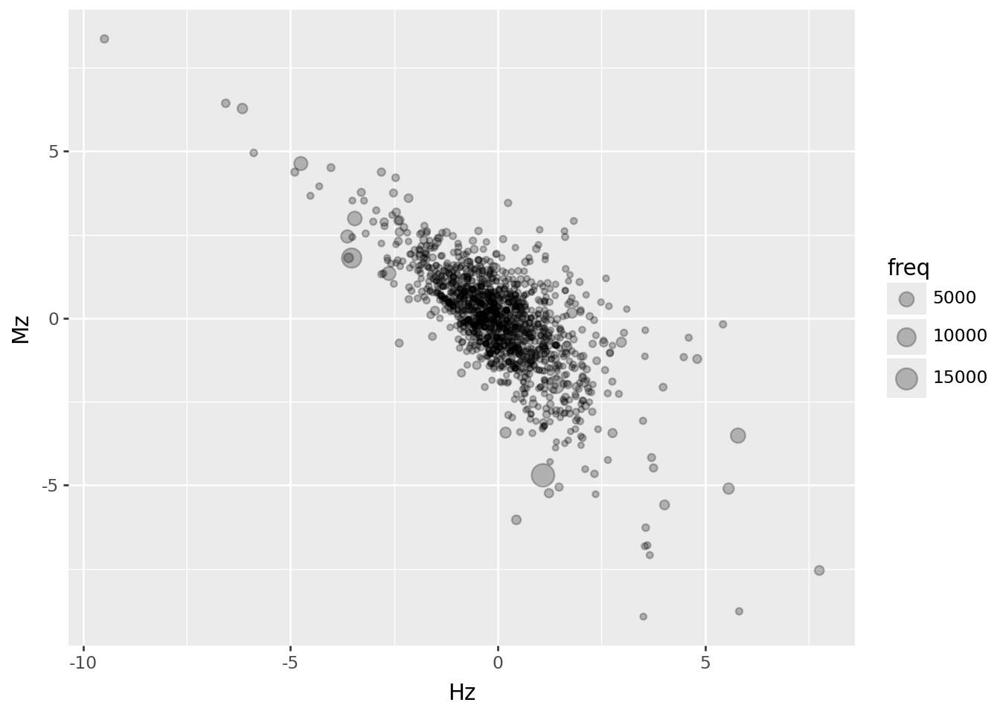
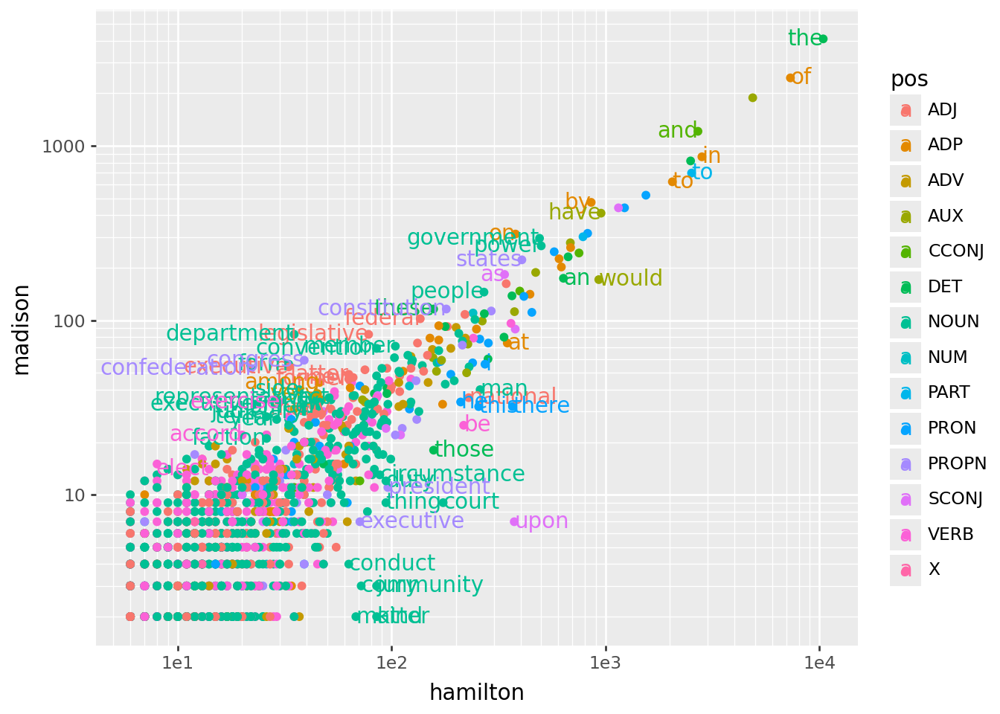
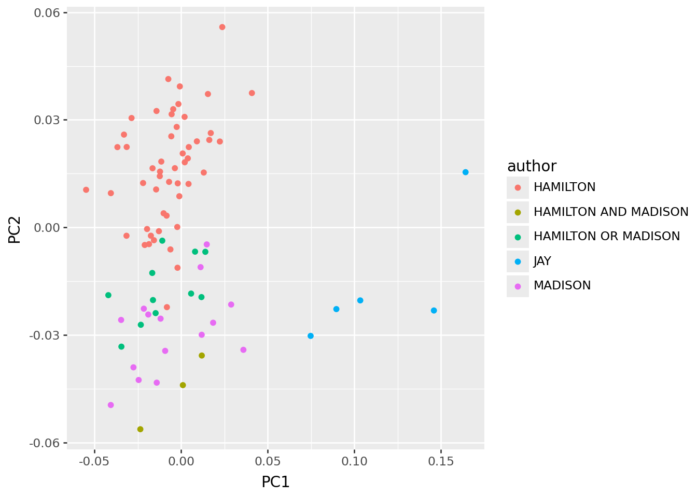
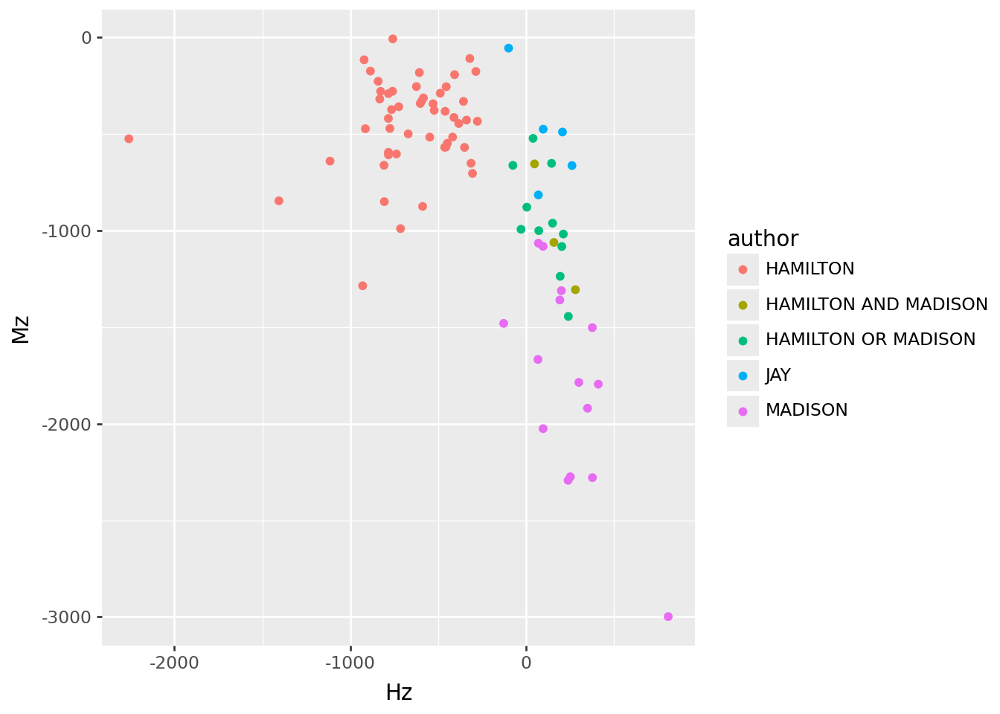

import json, re, collections
import pandas as pd
import numpy as np
import plotnine as p9
with open("data/federalist.json", 'r') as f:
text = [json.loads(line) for line in f]
info = pd.DataFrame(
{ k: [t[k] for t in text] for k in ['author', 'date', 'title', 'paper_id', 'venue']}
).assign(length = [len(t['text'].split(" ")) for t in text])Working with text
A bit more with the federalist papers
We’re not yet done here, because we’d still like to know: Who wrote the disputed papers?
So far, we’ve found that it’s not “completely obvious” (i.e., attribution doesn’t pop out of an unguided dimension reduction for Hamilton vs Madison, although it does for Jay).
The data, again
spaCy
But this time
…we’ll use spaCy, installable via pip and available under the MIT license.
Here’s a guide to using spaCy.
Note: this is currently only available with python <= 3.13.
Let’s look at:
What this looks like in practice
First, install spaCy (python <= 3.13!)
import spacyThen, download a pre-trained model:
!python -m spacy download en_core_web_smAnd use it:
nlp = spacy.load("en_core_web_sm")
doc = nlp(text[0]['text'])
doc[:100]To the People of the State of New York:
AFTER an unequivocal experience of the inefficacy of the
subsisting federal government, you are called upon to deliberate on
a new Constitution for the United States of America. The subject
speaks its own importance; comprehending in its consequences
nothing less than the existence of the UNION, the safety and welfare
of the parts of which it is composed, the fate of an empire in many
respects the most interesting in the world. It has been frequentlyWhat this gets us
tldr; lots of stuff
for token in doc[:10]:
print(f"{token.text}\t{token.pos_}\t{token.dep_}")To ADP prep
the DET det
People NOUN pobj
of ADP prep
the DET det
State PROPN pobj
of ADP prep
New PROPN compound
York PROPN pobj
: PUNCT punctBack to the data
Which words are used differently?
Mosteller and Wallace found words they thought might be used differently (e.g., “upon”) and then used these to construct a statistical test. Let’s have a look.
But wait: what is “a word”? For instance: “right” can be several parts of speech.
Plan:
Count up how many time each “word” (defined to be: (text, part-of-speech) pair) appears in each author’s writing.
Pull out the ones that differ a lot.
Visualize the texts using just those words.
Counting the words
First, set up the list of words:
docs = [nlp(t['text']) for t in text]
wordlist = [
(token.lemma_.lower(), token.pos_) for doc in docs for token in doc
if not (token.is_punct or token.is_space)
]
counts = collections.Counter(wordlist)
words = list(counts.keys())
worddf = pd.DataFrame({
"word" : [ w[0] for w in words ],
"pos" : [ w[1] for w in words ],
"is_stop" : [ doc.vocab[w].is_stop for w, _ in words ],
"freq" : [ counts[w] for w in words ],
}).sort_values("freq", ascending=False).reset_index(drop=True)
worddf| word | pos | is_stop | freq | |
|---|---|---|---|---|
| 0 | the | DET | True | 17684 |
| 1 | of | ADP | True | 11796 |
| 2 | be | AUX | True | 8360 |
| 3 | and | CCONJ | True | 5080 |
| 4 | in | ADP | True | 4443 |
| ... | ... | ... | ... | ... |
| 7610 | relinquishment | NOUN | False | 1 |
| 7611 | colorable | NOUN | False | 1 |
| 7612 | thenceforth | VERB | False | 1 |
| 7613 | verbal | ADJ | False | 1 |
| 7614 | adverting | PROPN | False | 1 |
7615 rows × 4 columns
Next, count by author:
def count_words(doc, worddf):
counts = collections.Counter([
(token.lemma_.lower(), token.pos_) for token in doc
])
return np.array([ counts[(w,c)] for (w,c) in zip(worddf['word'], worddf['pos']) ])
worddf['hamilton'] = 0
worddf['madison'] = 0
for auth, doc in zip(info['author'], docs):
if auth in ("HAMILTON", "MADISON"):
worddf[auth.lower()] += count_words(doc, worddf)
worddf['Hf'] = worddf['hamilton'] / worddf['hamilton'].sum()
worddf['Mf'] = worddf['madison'] / worddf['madison'].sum()
worddf| word | pos | is_stop | freq | hamilton | madison | Hf | Mf | |
|---|---|---|---|---|---|---|---|---|
| 0 | the | DET | True | 17684 | 10403 | 4101 | 0.091813 | 0.099873 |
| 1 | of | ADP | True | 11796 | 7309 | 2451 | 0.064506 | 0.059690 |
| 2 | be | AUX | True | 8360 | 4872 | 1886 | 0.042998 | 0.045931 |
| 3 | and | CCONJ | True | 5080 | 2702 | 1211 | 0.023847 | 0.029492 |
| 4 | in | ADP | True | 4443 | 2819 | 865 | 0.024879 | 0.021066 |
| ... | ... | ... | ... | ... | ... | ... | ... | ... |
| 7610 | relinquishment | NOUN | False | 1 | 1 | 0 | 0.000009 | 0.000000 |
| 7611 | colorable | NOUN | False | 1 | 1 | 0 | 0.000009 | 0.000000 |
| 7612 | thenceforth | VERB | False | 1 | 1 | 0 | 0.000009 | 0.000000 |
| 7613 | verbal | ADJ | False | 1 | 1 | 0 | 0.000009 | 0.000000 |
| 7614 | adverting | PROPN | False | 1 | 1 | 0 | 0.000009 | 0.000000 |
7615 rows × 8 columns
Here’s what we get:
(
worddf
.query("hamilton > 5 and madison > 5")
>>
p9.ggplot(p9.aes(x='hamilton', y='madison', color='pos'))
+ p9.geom_point()
+ p9.scale_x_log10()
+ p9.scale_y_log10()
)
Interlude: \(z\)-scores
Which words are “most different”?
Recall the chi-squared test for contingency tables. The key part of this is:
\[\begin{aligned} z_{ij} = \frac{\text{observed}_{ij} - \text{expected}_{ij}}{\sqrt{\text{expected}_{ij}}} . \end{aligned}\]
chalkboard interlude
Compute \(z\) scores
\[\begin{aligned} \text{expected}_{ij} = n_{i \cdot} \times \frac{ n_{\cdot j} }{ n_\text{total} } \end{aligned}\]
worddf['He'] = worddf['freq'] * worddf['hamilton'].sum() / worddf['freq'].sum()
worddf['Hz'] = (worddf['He'] - worddf['hamilton']) / np.sqrt(worddf['He'].values)
worddf['Me'] = worddf['freq'] * worddf['madison'].sum() / worddf['freq'].sum()
worddf['Mz'] = (worddf['Me'] - worddf['madison']) / np.sqrt(worddf['Me'].values)
worddf| word | pos | is_stop | freq | hamilton | madison | Hf | Mf | He | Hz | Me | Mz | |
|---|---|---|---|---|---|---|---|---|---|---|---|---|
| 0 | the | DET | True | 17684 | 10403 | 4101 | 0.091813 | 0.099873 | 10515.018986 | 1.092412 | 3810.600489 | -4.704345 |
| 1 | of | ADP | True | 11796 | 7309 | 2451 | 0.064506 | 0.059690 | 7013.976700 | -3.522688 | 2541.836879 | 1.801724 |
| 2 | be | AUX | True | 8360 | 4872 | 1886 | 0.042998 | 0.045931 | 4970.909224 | 1.402875 | 1801.437463 | -1.992363 |
| 3 | and | CCONJ | True | 5080 | 2702 | 1211 | 0.023847 | 0.029492 | 3020.600342 | 5.796951 | 1094.653386 | -3.516539 |
| 4 | in | ADP | True | 4443 | 2819 | 865 | 0.024879 | 0.021066 | 2641.836087 | -3.446850 | 957.390747 | 2.985959 |
| ... | ... | ... | ... | ... | ... | ... | ... | ... | ... | ... | ... | ... |
| 7610 | relinquishment | NOUN | False | 1 | 1 | 0 | 0.000009 | 0.000000 | 0.594606 | -0.525729 | 0.215483 | 0.464201 |
| 7611 | colorable | NOUN | False | 1 | 1 | 0 | 0.000009 | 0.000000 | 0.594606 | -0.525729 | 0.215483 | 0.464201 |
| 7612 | thenceforth | VERB | False | 1 | 1 | 0 | 0.000009 | 0.000000 | 0.594606 | -0.525729 | 0.215483 | 0.464201 |
| 7613 | verbal | ADJ | False | 1 | 1 | 0 | 0.000009 | 0.000000 | 0.594606 | -0.525729 | 0.215483 | 0.464201 |
| 7614 | adverting | PROPN | False | 1 | 1 | 0 | 0.000009 | 0.000000 | 0.594606 | -0.525729 | 0.215483 | 0.464201 |
7615 rows × 12 columns
A few \(z\) scores are above \(\pm 5\); most are smaller, and these are negatively correlated (unsurprisingly):
(
worddf.query("hamilton > 5 and madison > 1")
>>
p9.ggplot(p9.aes(x="Hz", y="Mz", size="freq"))
+ p9.geom_point(alpha=0.25)
)
Which words are “different”? Let’s take an arbitrary cutoff:
sub_words = (
worddf
.query("freq > 50 and (abs(Hz) > 3 or abs(Mz) > 3)")
)
sub_words| word | pos | is_stop | freq | hamilton | madison | Hf | Mf | He | Hz | Me | Mz | |
|---|---|---|---|---|---|---|---|---|---|---|---|---|
| 0 | the | DET | True | 17684 | 10403 | 4101 | 0.091813 | 0.099873 | 10515.018986 | 1.092412 | 3810.600489 | -4.704345 |
| 1 | of | ADP | True | 11796 | 7309 | 2451 | 0.064506 | 0.059690 | 7013.976700 | -3.522688 | 2541.836879 | 1.801724 |
| 3 | and | CCONJ | True | 5080 | 2702 | 1211 | 0.023847 | 0.029492 | 3020.600342 | 5.796951 | 1094.653386 | -3.516539 |
| 4 | in | ADP | True | 4443 | 2819 | 865 | 0.024879 | 0.021066 | 2641.836087 | -3.446850 | 957.390747 | 2.985959 |
| 6 | to | PART | True | 3859 | 2522 | 698 | 0.022258 | 0.016999 | 2294.585969 | -4.747501 | 831.548704 | 4.631224 |
| ... | ... | ... | ... | ... | ... | ... | ... | ... | ... | ... | ... | ... |
| 334 | term | NOUN | False | 70 | 26 | 28 | 0.000229 | 0.000682 | 41.622446 | 2.421504 | 15.083807 | -3.325669 |
| 373 | executive | NOUN | False | 63 | 23 | 33 | 0.000203 | 0.000804 | 37.460201 | 2.362595 | 13.575426 | -5.271992 |
| 388 | elect | VERB | False | 59 | 14 | 14 | 0.000124 | 0.000341 | 35.081776 | 3.559315 | 12.713494 | -0.360811 |
| 440 | faction | NOUN | False | 51 | 26 | 21 | 0.000229 | 0.000511 | 30.324925 | 0.785378 | 10.989630 | -3.019664 |
| 444 | accord | VERB | False | 51 | 20 | 22 | 0.000177 | 0.000536 | 30.324925 | 1.874939 | 10.989630 | -3.321317 |
67 rows × 12 columns
And, back to our original plot:
sub_words['ha'] = np.where(sub_words['Hf'] > sub_words['Mf'], "left", "right")
(
worddf
.query("hamilton > 5 and madison > 1")
>>
p9.ggplot(p9.aes(x='hamilton', y='madison', color='pos'))
+ p9.geom_point()
+ p9.scale_x_log10()
+ p9.scale_y_log10()
+ p9.geom_text(data=sub_words, mapping=p9.aes(x="hamilton", y="madison", label="word", ha='ha'))
)
PCA again?
Now, does PCA with the “distinguishing words” actually distinguish the authors?
wordmat = np.array([
count_words(doc, sub_words)
for doc in docs
])
wordmat.shape(85, 67)import sklearn.decomposition
X = wordmat.astype("float")
X /= X.sum(axis=1)[:,np.newaxis]
skpca = sklearn.decomposition.PCA(n_components=4).fit(X)
skpcs = pd.concat([info, pd.DataFrame(
skpca.transform(X),
columns=[f"PC{k+1}" for k in range(skpca.n_components_)]
)], axis=1)
skloadings = (
pd.DataFrame(skpca.components_.T, index=sub_words.loc[:,['word','pos']], columns=[f"PC{k+1}" for k in range(skpca.n_components_)])
.reset_index(names='variable')
)… kinda?
skpcs >> p9.ggplot(p9.aes(x="PC1", y="PC2", color='author')) + p9.geom_point()
A more direct approach
Instead, let’s use the \(z\)-scores like “loadings” to construct a per-essay \(z\)-score:
info['Hz'] = wordmat.dot(sub_words.loc[:,["Hz"]])
info['Mz'] = wordmat.dot(sub_words.loc[:,["Mz"]])
info >> p9.ggplot(p9.aes(x="Hz", y="Mz", color="author")) + p9.geom_point()
Conclusion
John Jay has different enough word usage to drive a PC that separates his work from the others. However, differences in word choice between Hamilton and Madison are not strong enough to completely separate them in a PCA. Surprisingly, this even holds when restricting to words that differ strongly in frequency between Hamilton and Madison. Constructing a \(z\)-type score to distinguish the authors using words that differ most between them places the disputed essays closer to Madison, but grouping with the known co-authored essays. Perhaps these were also co-authored? We need more historical context, and a more sophisticated statistical framework.
One more tidbit
Are there words that both Hamilton and Madison use, but in different ways?
n = sub_words.value_counts("word")
n.index[n > 1]Index(['executive', 'to'], dtype='str', name='word')Hamilton seems to use “executive” as a proposition much more than Madison:
sub_words.query("word.isin(['executive', 'to'])")| word | pos | is_stop | freq | hamilton | madison | Hf | Mf | He | Hz | Me | Mz | ha | |
|---|---|---|---|---|---|---|---|---|---|---|---|---|---|
| 6 | to | PART | True | 3859 | 2522 | 698 | 0.022258 | 0.016999 | 2294.585969 | -4.747501 | 831.548704 | 4.631224 | left |
| 7 | to | ADP | True | 3184 | 2051 | 622 | 0.018101 | 0.015148 | 1893.226671 | -3.626037 | 686.097713 | 2.447088 | left |
| 230 | executive | ADJ | False | 102 | 33 | 54 | 0.000291 | 0.001315 | 60.649849 | 3.550405 | 21.979261 | -6.830065 | right |
| 296 | executive | PROPN | False | 79 | 71 | 7 | 0.000627 | 0.000170 | 46.973903 | -3.505540 | 17.023153 | 2.429318 | left |
| 373 | executive | NOUN | False | 63 | 23 | 33 | 0.000203 | 0.000804 | 37.460201 | 2.362595 | 13.575426 | -5.271992 | right |